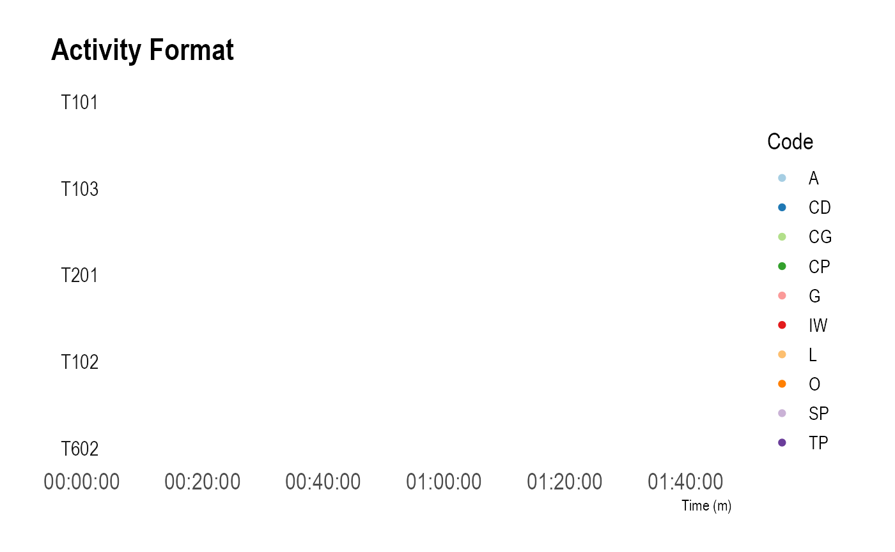

library(datavyu)
library(datavyur) # (install via `devtools::install_github("iamamutt/datavyu/datavyur")`)
library(tidyverse) # install via install.packages("tidyverse")
library(irr) # install via install.packages("irr")
library(here) # install.packages("here")
library(cowplot) # install via install.packages("cowplot")
datavyu_col_search(here("irr-data", "datavyu_output_11-17-2020_14-11")) %>%
distinct(file, column, codes) %>%
arrange(column)Here, I just took the file, column, and codes from above, passing them to prep_time_series(). Right now, the code has to include the column; we’ll have to change that.
prepared_time_series <- prep_time_series(column = "LogClass_AS_ActivityFormat",
code = "LogClass_AS_ActivityFormat.code01") %>%
mutate(code = toupper(code))
prepared_time_series <- prepared_time_series %>%
mutate(file = as.factor(file))
levels(prepared_time_series$file) <- c("T602", "T101", "T201", "T102", "T103")
prepared_time_series <- prepared_time_series %>%
mutate(file = fct_relevel(file, c("T101", "T103", "T201", "T102", "T602")))
plot_time_series(prepared_time_series, normalize_ts = TRUE) +
hrbrthemes::theme_ipsum(base_size = 14) +
scale_color_brewer("Code", palette = 3, type = "qual") +
ggtitle("Activity Format")
ggsave(here("irr-data", "five-teachers-af-4.png"), width = 8, height = 7)